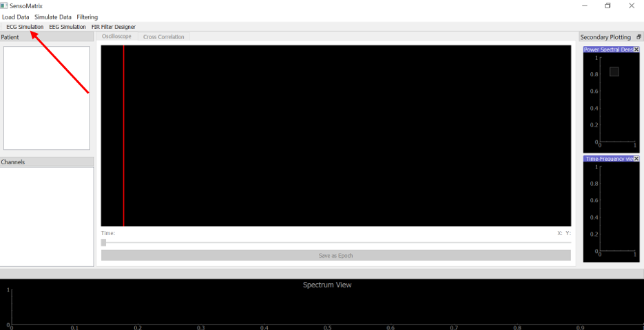
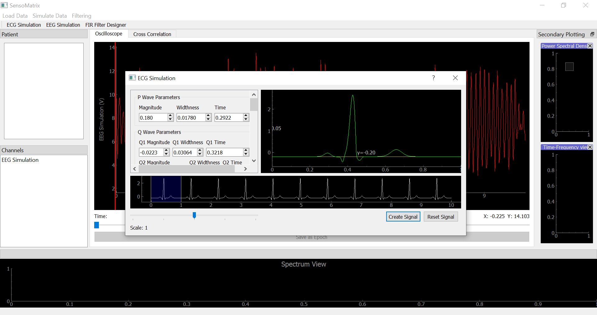

How To Load Data
How to load data from hard disk
Note: Currently you can load the following file types assuming that each follow their respective formats: .txt .json (JSON Template) .edf (from Physionet) .fif (from Physionet)
The .txt file should follow the following format:
%name of signal%
%type of signal%
%sampling rate of signal%
%list of time separated by commas%
%list of samples separated by commas%
For Example:
EEG Jansen
eeg
200
0, 1, 2, 3, 4, 5, 6, 7, 8, 9, 10
4, 6, 2, 9, 11, 1, 0, 4, 3, 12, 5
Step 1
From the main screen, click on Load data at the top left corner and click on Locally.

Step 2
This will open the dialog to browse for the file on your computer. Browse through your computer, select your input file, and click Open.

Step 3
Once the file is loaded onto the application, you should be able to see the signal on the Oscilloscope, similar to the figure below.
If the file is a JSON file, then you would also see a few key patient information on the left hand side.

How to load data from Physionet
Physionet is an online database with several recorded biosignals available to the public. Note: Internet connection is required.
Step 1
From the main screen, click on Load data at the top left corner and click on PhysioNet.

Step 2
This will open the dialog similar to the figure below. You can click on DB URL here or on the
dialog to go to Physionet.

Navigate the site, and once you find a dataset of interest, for example like that in the figure below.

Copy & paste the URL and dataset name into the dialog. Also, choose from what sample to what sample you want to see.
Choose the type of the signal and check the box if you would like to see the annotations. Then click on Import dataset. Once the dataset has been loaded, it
will be displayed on the Oscilloscope.

How to simulate your own data
EEG Simulation
Step 1
Click on EEG Simulation at the top left hand side.

Step 2
In the EEG Simulation dialog, you can set the various signal parameters,
such as C1 (Jansen Model), signal name, noise, sampling frequency (Note: Max 1KHz), and duration (Note: Min: 1 sec).
You can click on Preview Signal in order to see what the signal you have created looks like.
Once you are satisfied with your signal, click on Create Signal to output the signal on the Oscilloscope.

ECG Simulation
Step 1
Click on ECG Simulation at the top left hand side. 
Step 2
In the ECG Simulation dialog, you can set various ECG parameters, such as the P Wave, Q Wave, R Wave, S Wave, and T Wave parameters. You can also set the signal name, noise, sampling frequency, duration, period, and delay. Once you are satisfied with your signal, click on Create Signal to output the signal on the Oscilloscope. 